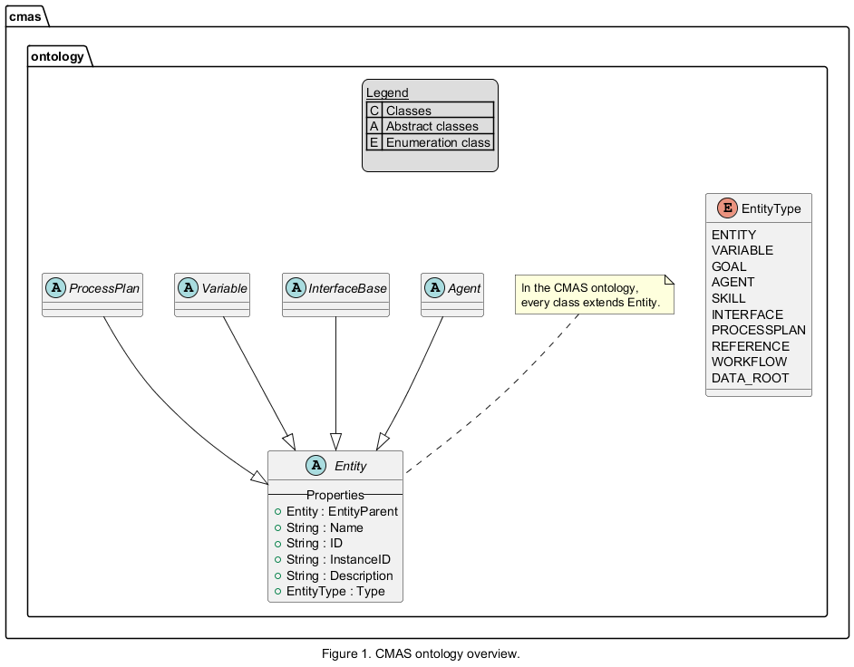
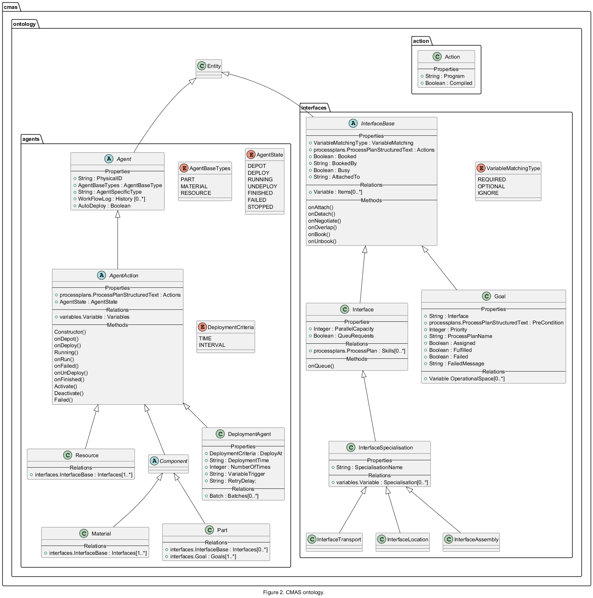
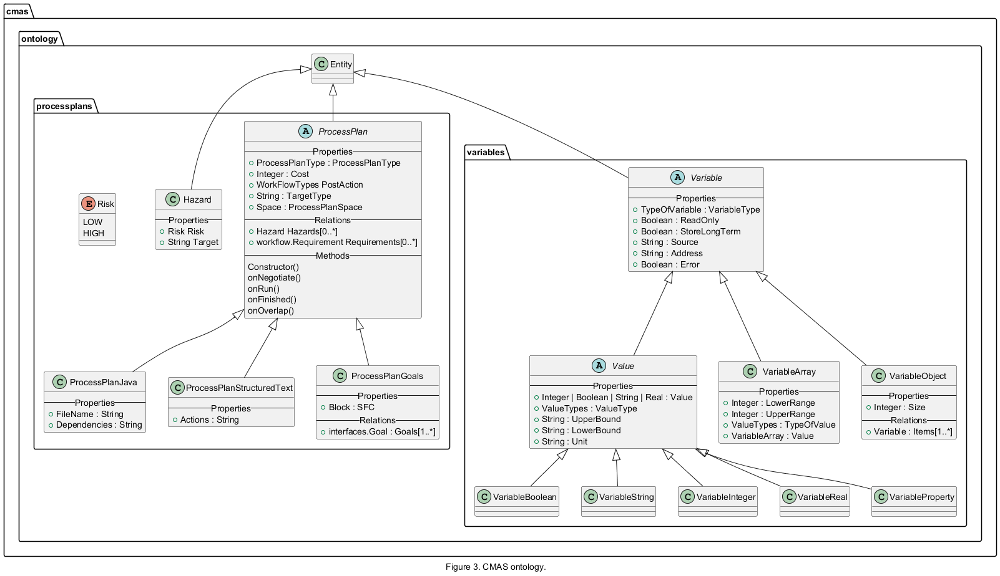
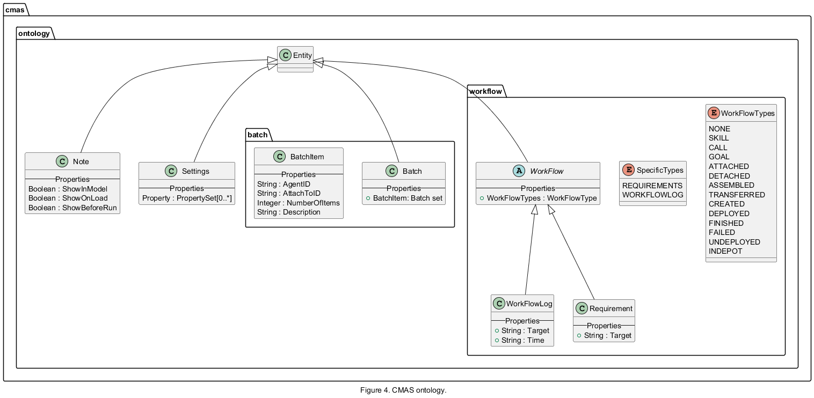

Object-oriented data modelling is a technique used in CMAS to represent and organize data as a collection of objects. Overall, object-oriented data modelling is a powerful approach for designing systems that closely align with real-world entities and relationships. Every object within CMAS comprises a combination of properties, relationships and methods, alongside inherited properties and relationships. As an example, if you have an Agent object in the CMAS system, it will have all the properties and relationships that are defined for the more general Entity object. This is a common concept in object-oriented data modelling, where specialised objects (like Agent) inherit attributes from more general classes (like "Entity"). A property represents a value that can be used by the object it self or the user, while a relation denotes a link to another object. Relations can handle new relations dynamically if they are compatible with the specific type of connection. A relation can be a direct relation to a child object or a reference relation to any compatible object in the system. A method is a predefined program or sequence of instructions that can be executed during runtime to perform a specific task. All methods defined in the ontology can be overridden, meaning their default behaviour can be redefined using Structured Text.
All objects in a model are visible in the Modelling tree viewer in CMAS and all properties are visible in the properties viewer. Relations categories are visible as sub-folders in the modelling tree holding child objects. The available objects in CMAS are based on a classes defined in the CMAS ontology. A class serves as a blueprint or template for creating objects and it defines the structure that objects of that class will have.
For a brief overview of the CMAS ontology see the figure below (or see the inheritance diagram for classes Entity).
The diagram in Figure 1 provides a high-level overview of the CMAS ontology. It highlights the foundational Entity class and the main abstract pillars of the model: agents, interfaces, variables, and process plans.
All objects in the CMAS ontology inherit from Entity, which defines the common identity, naming, and lifecycle-related properties. The overview intentionally omits detailed relationships and concrete specialisations in order to present a clear conceptual structure of the system.

Figure 2 describes the agent and interface hierarchy in the CMAS ontology. Agents represent active or passive entities that participate in execution, while interfaces define the interaction points between agents, resources, and goals.
The diagram shows how agent behavior is structured through inheritance, lifecycle states, and actions, as well as how interfaces and goals enable negotiation, coordination, and task execution within the system.
Figure 2. Agent and interface hierarchy (click to expand)


The diagram in Figure 3 illustrates the hierarchy of process plans and variables used in CMAS to describe executable behavior and data exchange.
Process plans define how work is performed, either through structured text, goal-based charts, or external implementations, while variables provide a typed and extensible mechanism for storing and exchanging values during modelling and runtime.
Together, process plans and variables form the core building blocks for decision-making, planning, and execution logic in CMAS.
Figure 3. Processplans and variables hierarchy (click to expand)


Figure 4 presents supporting ontology objects related to workflow, deployment, configuration, and documentation.
Workflow objects capture execution history and requirements, while batch and deployment-related objects define how entities are instantiated and deployed at runtime. Additional objects such as notes and settings are used to document and configure the model but do not directly affect execution logic.
Figure 4. Workflow and other objects hierarchy (click to expand)

The diagram in Figure 5 shows runtime-specific classes used by the CMAS execution environment.
These classes are not part of the modelling ontology but represent runtime services, execution domains, and internal program structures used to interpret and execute process plans. They are included here for completeness and to illustrate the separation between modelling concepts and runtime implementation but lack details.
Figure 5. Runtime hierarchy (click to expand)

All main objects in the CMAS ontology and their specific properties are described in the following section.
The Entity class is the foundation of the CMAS ontology and defines the common modeling structure used by all objects in CMAS. Every object in the ontology inherits from Entity, including agents, interfaces, variables, process plans, workflow objects, and configuration objects. An entity consists of two fundamental elements:
Properties – named values that define the behaviour, configuration, or state of an object. Relations – typed collections of other objects that define how entities are connected.
Properties are predefined by the ontology and can be edited by the user during modeling. By changing property values, the behavior and configuration of an object can be customized without modifying the underlying object definition.
Relations act as typed containers that organize connections to other entities. Each relation only accepts specific object types defined by the ontology. For example, a Resource contains an Interfaces relation that can hold one or more interface objects, while a Part contains a Goals relation that can hold goal objects. Relations therefore define both the structure of the model and the valid connections between objects.
Because every object in CMAS is an Entity, the same modeling principles apply throughout the system. Regardless of whether the object represents a resource, a process plan, a variable, or a goal, it is configured through properties and connected to other objects through relations.
Entity itself is an abstract class and cannot be instantiated directly.
| Table Entity class attributes |
A Note is used to document important information or highlight considerations within a model. It serves as a user-facing notification and is ignored by the system during runtime. Notes are typically used for providing additional context, explanations, or reminders to the users working with the model.
| Table Note class attributes |
The Settings object provides a centralized view of selected properties from across the model. Its purpose is to simplify configuration by allowing important parameters to be collected and edited from a single location.
Rather than navigating through the model to locate individual objects and their properties, the user can add references to selected properties in the Settings object. This creates a convenient configuration interface for frequently adjusted values.
For example, a model may contain several process plans located in different parts of the model hierarchy. By adding their Cost properties to the Settings object, all costs can be viewed and modified from one place without needing to locate each individual process plan.
The Settings object does not introduce new behavior and does not store independent values. Instead, it provides direct access to properties that already belong to other entities in the model. Any changes made through Settings are immediately reflected in the original objects.
Typical uses include:
Collecting configurable process parameters. Exposing planning and optimisation settings. Creating a simplified configuration view for end users. Grouping frequently modified properties in a single location.
The Settings object is intended purely as a modeling and configuration aid and has no direct impact on runtime execution beyond the property values it exposes.
| Table Settings class attributes |
| Property | Description | Type |
|---|---|---|
| Settings::PropertySet | The set of properties that can be configured. | Property [] |
A folder is an organizational entity used to structure the model in a way that enhances readability and understanding. It helps group related objects together, making it easier to navigate and manage complex models.
| Table Folder class attributes |
| Property | Description | Type |
|---|---|---|
| Folder::MakeInstances | If true all items in the folder will be create as instances during runtime. | Boolean |
A ProcessPlan defines executable behavior in CMAS. It describes how a task, operation, or activity can be performed and serves as the common base class for all process plan implementations.
Process plans are used throughout the system to represent skills, agent actions, goal execution logic, and other executable functionality. During planning and negotiation, process plans can be evaluated based on properties such as cost, requirements, and hazards.
ProcessPlan is an abstract class and cannot be instantiated directly. Instead, executable behaviour is implemented using one of its specialised subclasses, such as ProcessPlanStructuredText, ProcessPlanGoals, or ProcessPlanJava.
| Table ProcessPlan class attributes |
| Table ProcessPlan class relations |
| Relation | Description | Type | Cardinality |
|---|---|---|---|
| ProcessPlan::Hazards | All related hazards associated with the execution of the process plan. | Hazard | [0..*] |
| ProcessPlan::Requirements | All requirements that must be fulfilled before the process plan can be executed. | workflow.Requirement | [0..*] |
| Table ProcessPlan class methods |
| Method | Description |
|---|---|
| ProcessPlan::Constructor() | Called on the creation of the runtime object |
| ProcessPlan::onNegotiate() | Called when someone wants to negotiate |
| ProcessPlan::onRun() | Called when someone wants to execute the process plan |
| ProcessPlan::onFinished() | Called when the process plan is done |
| ProcessPlan::onOverlap() | Called to check if the process plan overlaps another process plan in the terms of risks |
A ProcessPlanGoals is a process plan that defines behavior through a collection of goals organized in a goal chart. Rather than describing execution as a sequence of programming statements, the process plan specifies what goals should be achieved and in what order they may be executed. The execution logic is represented by an SFC-like (Sequential Function Chart) structure that can contain goals, actions, conditions, parallel branches, and alternative paths. This allows complex workflows to be modeled graphically while keeping the execution logic easy to understand and maintain.
Each goal in the process plan represents a desired outcome that must be fulfilled. During execution, the CMAS planner determines how goals can be achieved by negotiating with available resources and selecting suitable process plans. ProcessPlanGoals is particularly useful when modeling workflows, production sequences, and coordination logic where the focus is on achieving objectives rather than implementing detailed algorithms.
| Table ProcessPlanGoals class attributes |
| Property | Description | Type |
|---|---|---|
| ProcessPlanGoals::SFC | A process plan chart describing the order of the goals and actions. | runtime.executable.sfc.statement.Block |
| Table ProcessPlanGoals class relations |
| Relation | Description | Type | Cardinality |
|---|---|---|---|
| ProcessPlanGoals::Goals | All ProcessPlanGoals must at least have one goal. The ProcessPlanGoals::SFC property describes how to execute all goals in the relation. | interfaces.Goal | [1..*] |
A ProcessPlanStructuredText defines a process plan written in Structured Text, a high-level programming language. Compared to ProcessPlanGoals, Structured Text offers more advanced and flexible programming features, enabling the implementation of more complex process logic.
| Table ProcessPlanStructuredText class attributes |
| Property | Description | Type |
|---|---|---|
| ProcessStructuredText::actions | A structured text program. | String |
A hazard object represents a potential hazard associated with a process plan. Each hazard has a target, which is a user-defined name. Hazards are considered by the planner or can be manually interpreted by agent actions. Hazards are considered during negotiation and planning.
| Table Hazard class attributes |
| Property | Description | Type |
|---|---|---|
| Hazard::Risk | A risk. | Risk |
| Hazard::Target | A user defined target for the risk. | String |
A risk represents a potential risk associated with a Hazard.
| Table Risk enum values |
| Property | Description | Type |
|---|---|---|
| Risk::LOW | A low risk is ignored by the planner and during negotiation. | LOW |
| Risk::HIGH | A high risk is considered by the planner and during negotiation. | HIGH |
All agents in CMAS ontology are based on the object Agent.
| Table Agent class attributes |
AgentAction implements an overall controller and states for all agents according to actions. Agent action has a relation named Variables that accept all ValueTypes.
| Table AgentAction class attributes |
| Property | Description | Type |
|---|---|---|
| AgentAction::Actions | A structure text program that implements actions. | processplans.ProcessPlanStructuredText |
| AgentAction::AgentState | Agent current state during runtime, i.e., INIT, DEPOT, DEPLOY, RUNNING, UNDEPLOY, FINISHED, FAILED, STOPPED. | AgentState |
| Table AgentAction class relations |
| Relation | Description | Type | Cardinality |
|---|---|---|---|
| AgentAction::Variables | Agent variables than can be access from all skills and actions. | variables.Variable | [0..*] |
| Table AgentAction class methods |
| Method | Description |
|---|---|
| AgentAction::Constructor() | Called on the creation of the runtime object |
| AgentAction::onDepot() | Called when the runtime object enters the Depot |
| AgentAction::onDeploy() | Called when the runtime object is deployed |
| AgentAction::Running() | Called constantly when the runtime object is running |
| AgentAction::onRun() | The onRun procedure is called once when the runtime object enters the Running state |
| AgentAction::onFail() | The onFail procedure is called once if the agent enters the Failed state |
| AgentAction::onUndeploy() | The onUndeploy procedure is called once the agent is deactivated or undeployed |
| AgentAction:: onFinished() | The onFinished procedure is called once a part agent is finished |
| AgentAction:: Activate() | If the agent is in the Depot state and Activate returns true the agent will be deployed |
| AgentAction:: Deactivate() | If the agent is in the Running state and Deactivate returns true the agent will be transfered to the UnDeploy state |
| AgentAction:: Failed() | If the agent is in the Running state and Failed returns true the agent will be transfered to the failed state |
A Resource agent is a passive entity within the system, designed to be accessed and used as a resource. It can interact with other components through its defined interfaces and skills. The Resource agent has a relationship called Interfaces, which can accept any type of InterfaceType. This allows for flexible interaction with other entities and agents in the system.
| Table Resource class attributes |
| Property | Description | Type |
|---|---|---|
| Table Resource class relations |
| Relation | Description | Type | Cardinality |
|---|---|---|---|
| Resource::Interfaces | All interfaces that can be used for negotiation and that can expose skills. | interfaces.Interface | [1..*] |
A Material agent is a passive agent that can be used as a subpart when it comes to assembly. A Material agent has a relation named Interfaces that accept all InterfaceTypes.
| Table Material class attributes |
| Property | Description | Type |
|---|---|---|
| Table Material class relations |
| Relation | Description | Type | Cardinality |
|---|---|---|---|
| Material::Interfaces | All interfaces that can be used for negotiation. | interfaces.Interface | [1..*] |
A Part agent is an active agent that will try to fulfil all goals. A Part agent has a relation named Goals that accept all GoalTypes.
| Table Part class attributes |
| Property | Description | Type |
|---|---|---|
| Part::ProcessPlan | A goal chart that express the order of the goals. | ProcessPlanGoals |
| Table DeploymentAgent class relations |
| Relation | Description | Type | Cardinality |
|---|---|---|---|
| Part::Interfaces | All interfaces that can be used for negotiation. | interfaces.Interface | [0..*] |
| Part::Goals | All goals that can be used in the goal chart of the agent. | interfaces.Goal | [1..*] |
The deployment agent will deploy all batches based on DeploymentTime or VariableTrigger. If VariableTrigger is empty, it will be ignored, and if DeploymentTime is less than 0, it will also be ignored. Otherwise, deployment occurs when the time is reached or the trigger variable is changed to true. For more complex trigger logic, you can utilise the Agent action and the Running procedure to modify the trigger variable's value.
| Table DeploymentAgent class attributes |
| Table DeploymentAgent class relations |
| Relation | Description | Type | Cardinality |
|---|---|---|---|
| DeploymentAgent::Batches | The batch objects specifies all agents to be deploy. | Batch | [0..*] |
| Table Variable class attributes |
| Property | Description | Type |
|---|---|---|
| Variable::VariableType | Type of variable. | ReadOnly TypeOfVariable |
| Variable::ReadOnly | If the variable is read only during run time. | Boolean |
| Variable::StoreLongTerm | If the variable value is stored in an external database or not. | Boolean |
| Variable::Source | Adapter source field, see adapters. | String |
| Variable::Address | Adapter address field, see adapters. | String |
| Variable::Error | If an error has occurred in the adapter during runtime. | ReadOnly Boolean |
Value is an abstract class to store values for variables.
| Table Value class attributes |
| Property | Description | Type |
|---|---|---|
| Value::Value | The variable value. | Integer | Boolean | String | Real |
| Value::ValueType | The variable value type. | ValueTypes |
| Value::UpperBound | The value UpperBound, see variable bounds. | String |
| Value::LowerBound | The value LowerBound, see variable bounds. | String |
| Value::Unit | The value unit of measurement. | String |
A boolean variable.
| Table VariableBoolean class attributes |
| Property | Description | Type |
|---|---|---|
An integer variable.
| Table VariableInteger attributes |
| Property | Description | Type |
|---|---|---|
A real variable.
| Table VariableReal attributes |
| Property | Description | Type |
|---|---|---|
A string variable.
| Table VariableString attributes |
| Property | Description | Type |
|---|---|---|
An array variable.
| Table VariableArray attributes |
| Property | Description | Type |
|---|---|---|
| VariableArray::LowerRange | The lower range of the array. | Integer |
| VariableArray::UpperRange | The upper range of the array. | Integer |
An variable object is a user defined type that has a relation named Items that accept all ValueTypes.
| Table VariableObject attributes |
| Property | Description | Type |
|---|---|---|
| VariableObject::Size | Number of items in the relation Items. | ReadOnly Integer |
| Table VariableObject class relations |
| Relation | Description | Type | Cardinality |
|---|---|---|---|
| VariableObject::Items | All items that belong to the object. An item can be of any Variable type, e.g., VariableInteger or VariableReal, it can even be another VariableObject. | Variable | [1..*] |
| Table InterfaceBase attributes |
| Property | Description | Type |
|---|---|---|
| InterfaceBase::VariableMatching | Variable matching for the interface, see interfaces. | VariableMatchingType |
| InterfaceBase::Actions | Interface actions, see interface action. | processplans.ProcessPlanStructuredText |
| InterfaceBase::Booked | Runtime property. | ReadOnly Boolean |
| InterfaceBase::BookedBy | Runtime property. | ReadOnly String |
| InterfaceBase::Busy | Runtime property. | ReadOnly Boolean |
| InterfaceBase::AttachedTo | Runtime property. | ReadOnly String |
| Table InterfaceBase class relations |
| Relation | Description | Type | Cardinality |
|---|---|---|---|
| InterfaceBase::Variables | Interface variables than can be access from all skills and actions and that are used during negotiations. | variables.Variable | [0..*] |
| Table InterfaceBase class methods |
| Method | Description |
|---|---|
| InterfaceBase::onAttach() | Called when an interface has been attached |
| InterfaceBase::onDetach() | Called when an interface has bee detached |
| InterfaceBase::onTransfer() | Called when post action transfered is executed |
| InterfaceBase::onUnbook() | Called when asked to unbook |
| InterfaceBase::onUnbook() | Called when asked to unbook |
| InterfaceBase::onNegotiate() | Called during negotiation |
| InterfaceBase::onBook() | Called when asked to book |
| InterfaceBase::onOverlap () | Called to check for overlap |
An interface object that has a relation named Skills that accept all SkillTypes.
| Table Interface attributes |
| Table Interface class relations |
| Relation | Description | Type | Cardinality |
|---|---|---|---|
| Interface::Skills | All published skills through the interface. | processplans.ProcessPlan | [0..*] |
A goal object.
| Table Goal attributes |
| Table Goal class relations |
| Relation | Description | Type | Cardinality |
|---|---|---|---|
| Goal::OperationalSpace | Operational space. | variables.Variable | [0..*] |
An interface object that can be used to implement specialisation tasks.
| Table Interface attributes |
| Property | Description | Type |
|---|---|---|
| InterfaceSpecialisation::SpecialisationName | Name of the specialisation. | String |
| Table InterfaceSpecialisation class relations |
| Relation | Description | Type | Cardinality |
|---|---|---|---|
| InterfaceSpecialisation::Variables | Specialisation variables than can be access from all skills and actions. Note these variables are not used during normal negotiation but can be a requirement for the planner. | variables.Variable | [0..*] |
The listed InterfaceSpecialisation objects below are not new object types but rather templates based on the InterfaceSpecialisation class. These templates are designed to simplify the modelling of specific specialisations by predefining certain relations and property values.
An abstract WorkFlow object.
| Table WorkFlow attributes |
| Property | Description | Type |
|---|---|---|
| WorkFlow::SpecificType | The specific workflow type. | ReadOnly SpecificTypes |
| WorkFlow::WorkFlowType | The workflow type. | WorkFlowTypes |
A WorkFlowLog object to log the work flow on agents.
| Table WorkFlowLog attributes |
| Property | Description | Type |
|---|---|---|
| WorkFlowLog::Target | Target for the log. | String |
| WorkFlowLog::Time | Time stamp for the log. | String |
A Requirement object to add requirements on skills.
| Table Requirement attributes |
| Property | Description | Type |
|---|---|---|
| Requirement::Target | Target for the requirement. | String |
The meaning of the Target depends on the WorkflowType.
For WorkflowType = SKILL, the Target must be specified as either: skill_name – the name of the skill that must be executed as a requirement. interface_name:skill_name – specifies that the skill must be executed by a resource implementing a particular interface.
For WorkflowType = GOAL: The Target must specify the name of a Goal to be achieved.
For WorkflowType = DEPLOY or UNDEPLOY: The Target specifies the name of the agent to deploy or undeploy.
For WorkflowType = ATTACH or DETACH: The Target has no specific purpose.
A batch represents a set of entities that will be deployed at the same time.
| Table Batch attributes |
| Property | Description | Type |
|---|---|---|
| Batch::Batch set | The set of entities that will be deployed | BatchItem |
| Table BatchItem attributes |
It is possible to extend the existing ontology in CMAS by creating new objects based on the existing ones. During the startup of CMAS, if the file cmas-ontology.json exists, it is read and interpreted.
This JSON file can contain instructions on how to extend the current ontology. The file consists of an array of object definitions, where each object must include the following information:
You can also define new properties that are added to the object, with the supported types being Integer, String, Boolean, and Real. A property must include:
Additionally, you can define new relations for the object. A relation object must include:
Example of two new objects Temperature and Operator in the cmas-ontology.json file:
The category can be one of the following values:
The PropertyType can be a combination of: